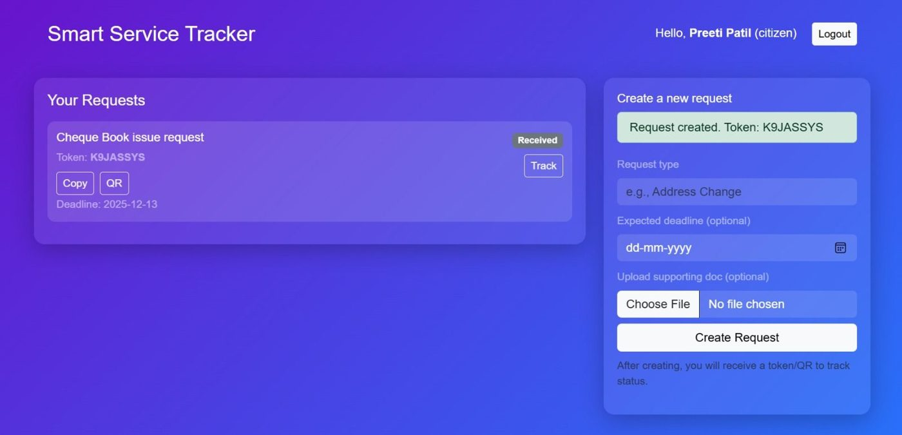
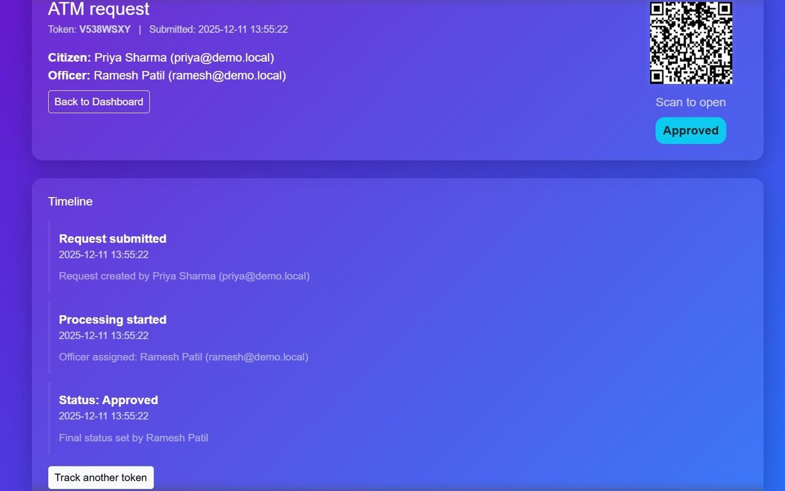
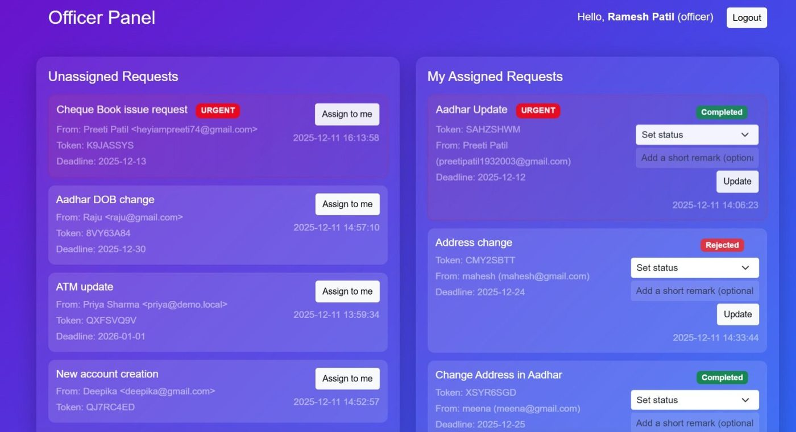

1. Executive Summary & Problem Discovery (User Empathy)
Instead of picking a pre-defined hackathon prompt, we conducted rapid firsthand problem discovery around recurring friction in retail bank branches across India (such as cheque book issuance, ATM card replacements, and KYC/address updates).
Core Pain Points Identified
- Customer Opacity: Customers wait in long physical queues without knowing whether their service request has been assigned or processed.
- Repeat Branch Visits: Lack of asynchronous status visibility forces customers to revisit the branch just to ask, “What is the update?”
- Officer File Bottlenecks: Bank officers handle paper files manually without a unified triage queue, making it hard to identify urgent or aging requests.
- Communication Disconnect: No structured channel exists for officers to log quick remarks (e.g., “Missing signature on ID proof”) before the customer returns.
2. Target User Personas & User Stories
To solve the workflow end-to-end, we designed a two-sided product serving two distinct user groups:
Persona A: Retail Bank Customer (“Ramesh, 42 — Salaried Account Holder”)
- Goal: Submit a service request once, leave the branch quickly, and check live progress from his phone.
- User Stories:
- As a customer, I want to submit a service request and upload supporting documents digitally so I don’t lose paper forms.
- As a customer, I want an instant unique token and scannable QR code upon submission so I can check my status anytime without calling the branch.
- As a customer, I want to read officer remarks on my ticket so I know immediately if further action is needed.
Persona B: Branch Operations Officer (“Priya, 31 — Customer Service Officer”)
- Goal: View all incoming requests in one place, prioritize urgent tickets, and reduce counter interruptions.
- User Stories:
- As an officer, I want to filter unassigned and urgent requests so I can triage high-priority tickets first.
- As an officer, I want to self-assign tickets and update status stages (
Received→In Progress→Completed) with remarks so customers stop interrupting my desk for status checks.
3. MVP Scope & Prioritization Trade-Offs (Execution Readiness)
With a strict 6-hour build-and-pitch constraint, we used an Impact vs. Effort (MoSCoW) prioritization matrix to cut feature bloat and ship a reliable end-to-end flow:
| Feature | Priority | Decision | Product Rationale (Trade-Off) |
|---|---|---|---|
| Digital Request & Document Upload | Must-Have (P0) | Shipped | Eliminates initial paper intake friction; essential core input. |
| Instant Token & QR Code Generation | Must-Have (P0) | Shipped | Zero-login, frictionless lookup for customers on mobile devices. |
| Officer Queue & 3-Stage Status Triage | Must-Have (P0) | Shipped | Directly solves officer prioritization and reduces counter interruptions. |
| Officer Remarks Log | Should-Have (P1) | Shipped | High user empathy value with minimal MySQL schema overhead. |
| Automated SMS / WhatsApp Alerts | Could-Have (P2) | Cut for v1 | Third-party gateway setup would consume >2 hours; QR lookup covers immediate validation. |
| Core Banking (CBS) API Integration | Won’t-Have (v1) | Cut for v1 | Out of scope for a 6-hour MVP; standalone relational DB proves workflow value first. |
4. UX Flow & Annotated Screens
Screen 1: Customer Request Intake & Document Upload

Screen 2: Instant QR Code & Live Status Tracker

Screen 3: Officer Triage & Prioritization Dashboard

5. Success Metrics & Analytics Framework (Analytical Thinking)
If deployed in a pilot retail bank branch, I would measure success using the following metric hierarchy:
- North Star Metric: Average End-to-End Request Resolution Time (hours from ticket creation to
Completedstatus). - Primary Adoption & Efficiency Metrics:
- Repeat Status-Inquiry Reduction (%): Decrease in walk-in/phone status inquiries per 100 submitted requests.
- QR Lookup Engagement Rate (%): Percentage of customers who scan/check their token link at least once before completion.
- Officer Triage SLA (%): Percentage of incoming requests assigned within 2 hours of submission.
- Guardrail Metric: Ticket Re-Open / Rejection Rate (ensures officers aren’t prematurely marking tickets
Completedjust to game resolution time).
6. Post-Hackathon Reflection & v2 Roadmap
- Key Learning: Building both sides of an operational workflow taught me that internal tool UX (officer dashboard) is just as critical as customer UX—if officers find updating statuses slow, customer tracking breaks down.
- v2 Roadmap (Next Iteration):
- Automated SMS/WhatsApp Webhooks triggered automatically when status shifts to
CompletedorAction Required. - SLA Aging Alerts highlighting tickets sitting in
Receivedfor >24 hours. - Branch Analytics View tracking bottleneck request types across tellers.
- Automated SMS/WhatsApp Webhooks triggered automatically when status shifts to